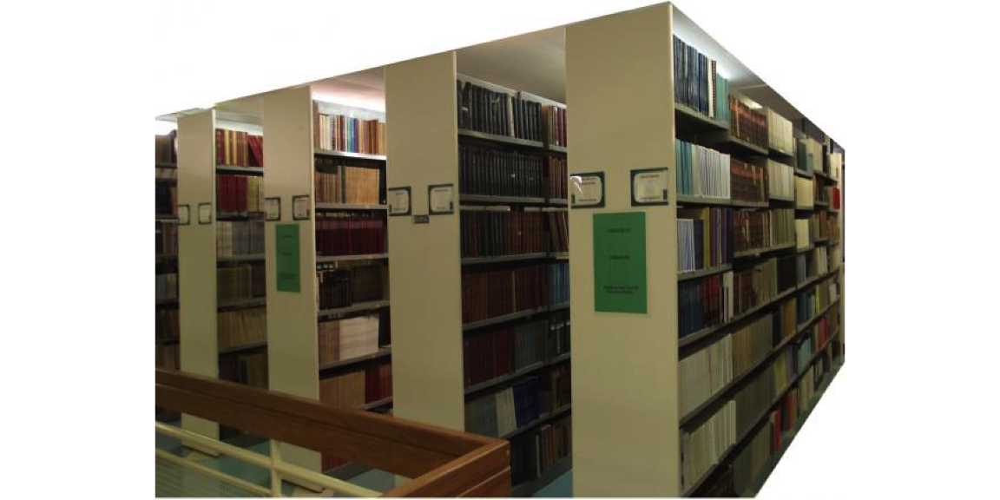

Capítulo 2 Text as data: o texto como dado
2.1 Panorama da área
A análise de conteúdo possui grande relevância para as ciências sociais. Contudo, sua abordagem manual sempre limitou o volume de documentos sob análise. São raros os projetos como o Manifesto Research Group que, desde os anos 1970, analisa a ênfase temática de manifestos partidários ou o Comparative Agendas Project, que coleta e analisa dados sobre agendas de políticas públicas em diferentes países.
O avanço tecnológico e científico permitiu que técnicas automatizadas de análise do conteúdo fossem desenvolvidas e aplicadas de forma simples a grandes acervos. Este avanço não foi realizado sem a contribuição das ciências sociais. Só a Political Analysis, principal revista de métodos em ciência política, possui dois special issues dedicados ao tema (Special Issue, Virtual Issue).
2.2 Oportunidades
Com o desenvolvimento de métodos para análise automatizada de conteúdo, hoje o leque de oportunidades as ciências sociais é diverso e promissor. Agora, é possível:
- Analisar grandes acervos de forma ágil e barata, otimizando o trabalho do pesquisador.

Figure 2.1: Biblioteca Florestan Fernandes - FFLCH - USP
- Pesquisar novos acervos para inferir o conteúdo presente e assim guiar pesquisas através de atalhos informacionais.
Figure 2.2: Acervo da CIA: https://www.cia.gov/library/readingroom/advanced-search-view
- Analisar processos políticos contemporâneos.

Figure 2.3: Trecho de fala do Deputado Federal Glauber Braga (PSOL-RJ) durante seu voto no processo de impeachment da então Presidenta da República Dilma Rousseff em 2016.
- Redes sociais.

Figure 2.4: Foto de Pedro Ladeira, Folha de São Paulo, maio de 2019.
- Fake news!

- Olhar o passado com as lentes do presente. Questões que antes não podiam ser enunciadas agora podem ser respondidas! Processos políticos conhecidos podem ganhar novas interpretações através do uso de métodos e técnicas contemporâneas de análise automatizada de conteúdo.
Figure 2.5: Liberdade Guiando o Povo - Eugène Delacroix - 1830
- Contribuir socialmente: Retórica Parlamentar - Projeto experimental desenvolvido no primeiro Hackathon da Câmara dos Deputados em 2013 por Davi Moreira, Manoel Galdino e Luis Carli. Posteriormente incubado pelo Laboratório Hacker da Câmara dos Deputados.

2.3 Quadro geral de metodologias
Dada a complexidade da linguagem, o processo de geração, produção e seleção de dados que resultam na comunicação humana é ainda um mistério para a ciência (Izumi and Moreira 2018; Grimmer and Stewart 2013). Logo, modelos estatísticos desenvolvidos falham na tarefa de prover um relato preciso do processo de geração de dados utilizados na produção de conteúdo e, principalmente, em seu significado.
Os modelos de análise de conteúdo, portanto, não devem ser avaliados pelo quanto explicam do processo de geração dos dados. Transformar palavras em números não substitui a leitura cuidadosa e atenta de documentos. Reconhecendo que “métodos de análise automatizada de conteúdo são modelos incorretos de linguagem” (Grimmer and Stewart 2013, 2), a performance de qualquer método automatizado não é garantida sem a consideração de ao menos quatro princípios:
Todos os modelos quantitativos de análise de conteúdo estão errados, mas alguns são úteis;
Métodos quantitativos de análise de conteúdo amplificam a capacidade humana, mas não a substitui;
Não há um método global para a análise automatizada de conteúdo;
Validar, validar, validar.
A escolha do modelo, da família de modelos ou de eventuais combinações a serem utilizadas é resultado dos objetivos almejados. Há uma variedade de modelos disponíveis e nenhum deles se sobrepõe aos demais.
Além de estatísticas e outras informações que podem ser obtidas através da mineração do texto enquanto dados, nesse livro será dado foco aos métodods de escalonamento e classificação de conteúdo. Assim, como indicado pelo quadro de Grimmer e Stewart (2013) métodos de análise supervisionada e não supervisionada serão abordados.

Figure 2.6: Quadro geral de metodologias para análise automatizada de conteúdo (Grimmer e Stewart, 2013)
2.4 O processo de análise do texto como dado
O processo de trabalho para análise quantitativa de texto é muito similar a qualquer tipo de fluxo de trabalho para análise de dados em geral. Como indicado no livro Text Mining with R: a tidy approach (Silge and Robinson 2017), o seguinte fluxograma será adotado nesse livro:

Figure 2.7: Fonte: Text Mining with R
Referências
Grimmer, Justin, and Brandon M. Stewart. 2013. “Text as Data: The Promise and Pitfalls of Automatic Content Analysis Methods for Political Texts.” Political Analysis, January, mps028. https://doi.org/10.1093/pan/mps028.
Izumi, Mauricio Yoshida, and D. C. Moreira. 2018. “O Texto Como Dado: Desafios E Oportunidades Para as Ciências Sociais.” REVISTA BRASILEIRA DE INFORMAÇÃO BIBLIOGRÁFICA EM CIÊNCIAS SOCIAIS - BIB 2 (86): 138–74.
Silge, Julia, and David Robinson. 2017. Text Mining with R: A Tidy Approach. Edição: 1. Beijing ; Boston: O’Reilly Media.